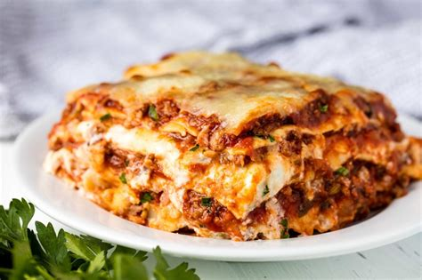

Lasagna

Lasagna for the whole family
Home made lasagna is just the best, and tastes even better as a left over!
Prep time: 10 mins
Cook Time 1 hr 10 mins
Ingredients
- 21 pound lean ground beef
- 1 (32oz) jar spaghetti sauce
- 32 ounces cottage cheese
- 3 cups shredded mozarella cheese
- 2 eggs
- 1/2 cup grated parmesan cheese
- 2 ts dried parsley
- salt to taste
- ground black pepper to taste
- 9 lasagna noodles
- 1/2 cup water
Steps
- Gather all ingredients.
- Preheat the oven to 175 degrees C (350 degrees F).
- Heat a large skillet over medium-high heat.
Cook and stir ground beef in the hot skillet until browned
and crumbly, 8-10 minutes.
Drain and discard grease.
Stir in spaghetti sause and simmer for 5 minutes.
- Combine cottage cheese, 2 cups of mozarella cheese, eggs,
1/2 of the grated parmesan cheese, dried parsley, salt,
and pepper in a large bowl.
- Spread 3/4 cup of sauce in a medium size baking dish.
Cover with 3 uncooked lasagna noodles, 1 3/4 cups of cheese mixture,
and 1/4 cup sauce; repeat layers once more.
Top remaining 3 noodles, sauce, mozarella, and parmesan cheese.
Pour 1/2 cup water along the edges of the dish.
Cover tightly with aluminum foil.
- Bake in the preheated oven for 45 minutes.
Uncover and bake for an additional 10 minutes.
Let stand for 10 minutes before serving.
- Serve and enjoy!
Home